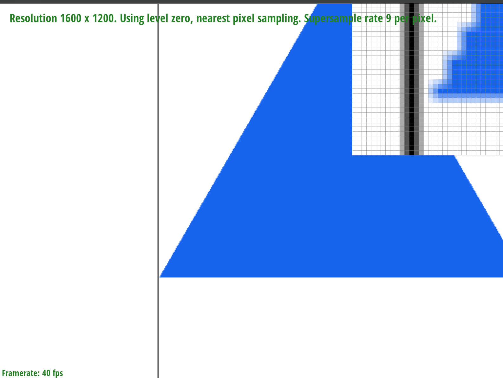
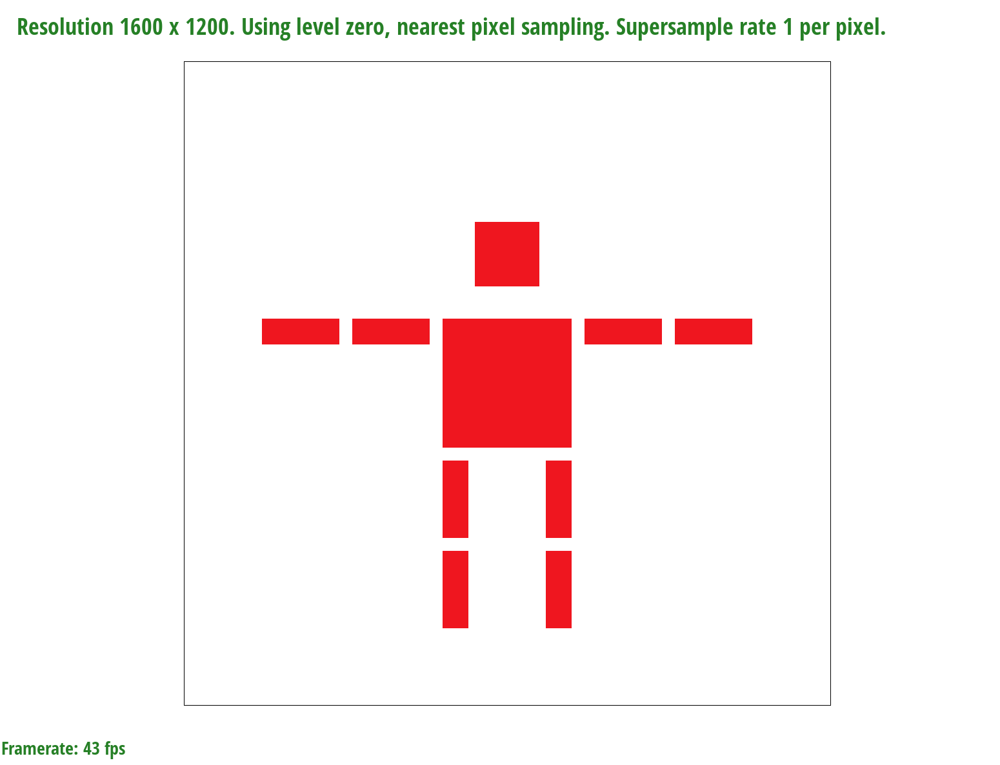

Overview
Give a high-level overview of what you implemented in this homework Think about what you've built as a whole. Share your thoughts on what interesting things you've learned from completing the homework.
Section I: Rasterization
Part 1: Rasterizing single-color triangles
Based on the slides 48 in lecture 2, I used the formula to create a triangle: L_i(x, y) = -(x-X_i)dYi + (y-Yi)dXi, and it goes from 0 to 2. Tests 3,4, and 5 passed with just one condition, which was rasterizing triangles assuming the vector goes clockwise. Then, I could not pass test 6, because there were some triangle that required the vecotrs to go counter-clockwise, so I just made an additional condition, in which the vector goes counter-clockwise. My algorithm is no worse than one that check each sample within bounding box of the triangle because it first finds points for bounding box; maxX, minX, maxY, and minY.
In addition to this, before I calculate relation between vectors, I added 0.5 to variable i and j because the coordinates of my sample should be equal to an integer point plus (.5,.5). Then subtracted 0.5 before executing the next loop.
 basic/test3.svg
basic/test3.svg
|
basic/test4.svg
|
|
basic/test5.svg
|
basic/test6.svg
|
Part 2: Antialiasing triangles
sqrt(sample_rate) * sqrt(sample_rate) equals the sample_rate. I had to re-implement fill_pixel method in a way that the program fills new pixels created by supersampling.
Key point for fill_pixel method was finding correct index for sample_buffer. Primary formula for index was y * width + x. Based on this, I modified this in a way that the program can iterate through every single pixel in the supersampled grid. Below is just one of the notes that I used to get an idea for indexing.
For the average coloring, I added the all the color value of r, g, and b in supersampled grid, and divided by sample_rate.
|
basic/test3.svg
|

basic/test4.svg
|
|
basic/test5.svg
|
basic/test6.svg
|
Part 3: Transforms
The given matrices are 3X3 because we can operate in homogeneous coordinates. Using methods that I implemented - translate(), scale(), and rotate() - I tried to make my cubeman act like he was trying to sit down.
|
Just with Translate
|

With Translate and Scale
|
|
With Translate, Scale, and Roate
|
My_robot.svg result
|
Section II: Sampling
Part 4: Barycentric coordinates
As implemented in the task 2, I tried to figure out whether the coordinates are in the triangle, and whether it is clockwise or counter-clockwise, using rasterization. Then if the coordinate fits for rasterization conditions, I calculated the color using barycentric coordinates.
For this task, I had to calculate the color of a point inside a triangle given the colors at the vertices of the triangle and using the barycentric coordinates of the point. The formula for this involves first calculating the barycentric coordinates of the point with respect to the triangle's vertices, and then using these coordinates as weights to blend the colors of the vertices.
The formula given below helps you understand how to calculate alpha, beta, and gamma for Barycentric Coordinates.
As mentioned in the ED Post, I used formula, Color color = alpha * c0 + beta * c1 + gamma * c2, to calculate the color for barycentric coordinates.
|
Barycentric Coordinate Formula
|
svg/basic/test7.svg
|
Part 5: "Pixel sampling" for texture mapping
As mentioned in the ED post, for sampling functions, I scaled uv.x and uv.y by mip's width and height, and to get barycentric coordinates, I re-used the code from task 4. Instead of using color values from task 4, I used u and v values to put in sample functions.
If the point is in the triangle, I checked whether psm is set to bilinear or nearest. Then, with the color value obtained from the sample function, I stored it in sample buffer with correct x and y index.
For texture.cpp, sample_nearest function was quite simple. As mentioned, I scaled uv.x and uv.y by mip's width and height value and rounded the (double) values to int, so that the values can fit into get_texel() function.
Sample_bilinear() function was a little more sophisticated that I made four color vectors, using four different int coordinates, and used bilinear filtering formula from the lecture to find correct color vector to render texture.
|
svg/texmap/test1.svg
|
svg/texmap/test2.svg
|
|
svg/texmap/test4.svg
|
 svg/texmap/test6.svg
svg/texmap/test6.svg
|
Part 6: "Level sampling" with mipmaps for texture mapping
In rasterize_textured_triangle method, I got rid of checking psm value conditions and put it in sample function in texture.cpp. To implement get_level function, I calculated the difference vectors sp.p_dx_uv - sp.p_uv and sp.p_dy_uv - sp.p_uv, and used the formula from the lecture to get D value for level.
There are total six conditions in the sample() function. Based on lsm value, I checked whether psm is P_LINEAR or P_NEAREST, and used appropriate functions for each condition.
Shown below, you can see the difference between a image in nearest filtering and a image in bilinear filtering. Bilinear filtering gives more natural feeling of the image overall.
|
svg/mipmap/test1.svg in nearest
|
svg/mipmap/test1.svg in bilinear
|
Code: https://github.com/cal-cs184-student/hw1-rasterizer-sp24-jason